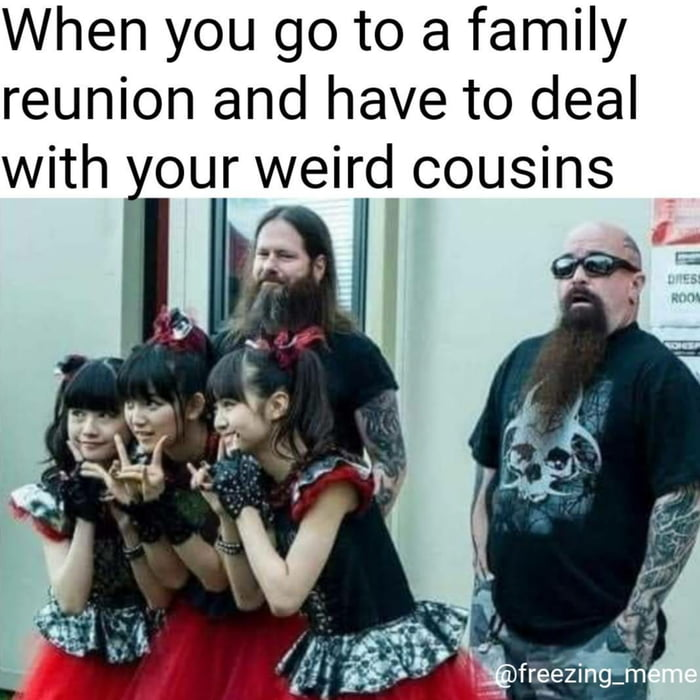

Writing about things
A long time ago one of my managers told me “you should write a blog!”… I dismissed the idea back then mainly because I did not like following the trends and I did not want to make another Wordpress site on the internet…
But yesterday late night while browsing memes on 9gag I came across this picture of a Japanese girl band whose name did not come to my mind…

It bothered very much me because I remember having seen their live performance during Rockavaria festival in 2015.
While I did spend about 15 minutes on this topic I realized I tend to forget a lot of other things lately and that got me scared a little. Because of that I have decided to create such posts to remind myself of such things in the future.
If you think I should write about our memories too then send me a message!
Sincerely, Istvan